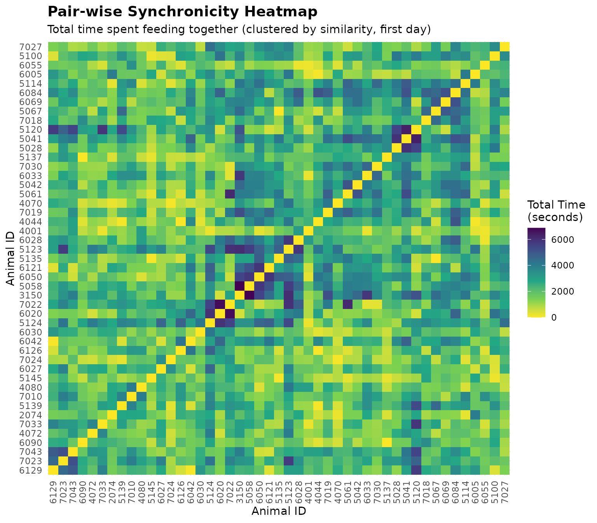
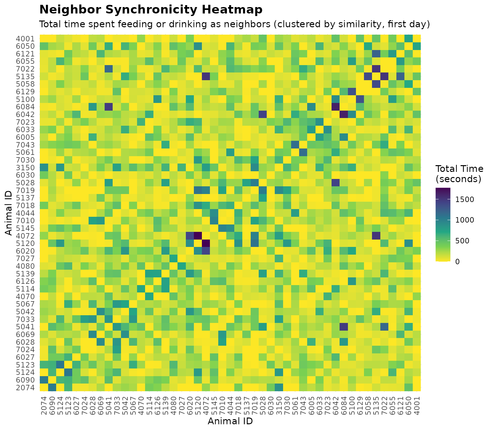

1. 🚨 Important: Set Your Global Variables First
Before analyzing synchronicity patterns, configure global variables to match your data structure:
# Configure global variables for your data structure
set_global_cols(
# Time zone
tz = "America/Vancouver", # Your timezone
# Column names in your cleaned data
id_col = "cow",
trans_col = "transponder",
start_col = "start",
end_col = "end",
bin_col = "bin",
dur_col = "duration",
intake_col = "intake",
start_weight_col = "start_weight",
end_weight_col = "end_weight",
# Bin settings
bins_feed = 1:30, # All feed bin IDs in your barn
bins_wat = 1:5, # All water bin IDs in your barn
bin_offset = 100, # Add this to water bin IDs to avoid conflicts
# Physical bin layout for spatial neighbor analysis
# Rows separated by "\n", bins within rows separated by "-"
# Only bins in the same row are considered spatial neighbors (left/right adjacency)
bin_layout = "1-2-3-4-5-6-101-102-7-8-9-10-11-12-13-14-15-16-17-18-103-104-19-20-21-22-23-24-25-26-27-28-29-30-105"
)2. Introduction to Synchronicity Analysis
Synchronicity in animal behavior refers to animals performing the same activity at the same time. Understanding synchronicity helps researchers identify social bonds and competition patterns. We will analyze two types of synchronicity: pair-wise co-occurrence and spatial neighbor proximity.
- Pair-wise co-occurrence: How often do 2 animals feed or drink simultaneously, regardless of location (they can be right next to each other or be physically far apart)?
- Spatial neighbor proximity: How often do 2 animals feed or drink right next to each other (spatially close)?
3. Prerequisites
This tutorial assumes you have completed data cleaning from Tutorial 1: Data Cleaning. You need cleaned feeding or drinking data.
4. Data Preparation
# Load cleaned example data
data(clean_feed) # For feed-only pair-wise analysis
data(clean_water) # For water-only pair-wise analysis
data(clean_comb) # Combined feed + water data for neighbor analysis
# If using your own data from previous tutorials:
# clean_feed <- your_cleaned_feed_data
# clean_water <- your_cleaned_water_data
# clean_comb <- combine_feed_water(clean_feed, clean_water)5. Creating Time-Based Activity Matrices
Before analyzing synchronicity, we need to transform visit-based data into time-based matrices.
Process Feed Data Matrices (for pair-wise analysis)
# Process feed data to create time-based matrices
# Resolution "sec" means one row per second (more detailed but will generate larger files)
# Resolution "min" means one row per minute (less detailed but will generate smaller files)
feed_matrices <- matrix_process(
data_list = clean_feed,
type = "feed",
resolution = "sec", # Try "min" for faster processing with less detail
id_col = id_col2(),
start_col = start_col2(),
end_col = end_col2(),
bin_col = bin_col2(),
start_weight_col = start_weight_col2(),
end_weight_col = end_weight_col2(),
bins_feed = bins_feed2()
)The matrix_process() function creates matrices
where:
- Rows represent time points (by second or minute)
- Columns represent individual animals
- Values indicate activity status at each time point
matrix_process() creates three types of matrices:
-
Animal activity matrix
(
synch_master_animal2): Shows which animals are feeding or drinking (i.e., active) at each time point (1 = active, 0 = inactive) -
Bin occupancy matrix
(
synch_master_bin2): Shows which bin each animal is using at each time point (0 = not using any bin) -
Feed weight matrix
(
synch_master_feed2): For feed data only, shows feed weight at each bin over time
The matrices are filtered to include only time points when at least one animal is feeding or drinking, to reduce output data file size.
Process Water Data Matrices (for pair-wise analysis)
# Process water data similarly
water_matrices <- matrix_process(
data_list = clean_water,
type = "drink",
resolution = "sec",
id_col = id_col2(),
start_col = start_col2(),
end_col = end_col2(),
bin_col = bin_col2(),
bins_wat = bins_wat2()
)Process Combined Feed and Water Data (for neighbor analysis)
For spatial neighbor analysis, we need to use combined feed and water data because water bins are often located between feed bins. Analyzing them separately would miss important spatial relationships.
# Process combined feed and water data to create time-based matrices
# The clean_comb dataset already contains both feed and water visits
combined_matrices <- matrix_process(
data_list = clean_comb,
type = "feed_and_drink", # Use combined type
resolution = "sec",
id_col = id_col2(),
start_col = start_col2(),
end_col = end_col2(),
bin_col = bin_col2(),
bins_feed = bins_feed2(),
bins_wat = bins_wat2()
)6. Pair-wise Co-Occurrence Analysis
Pair-wise analysis examines how much time every 2 animals spend feeding or drinking simultaneously, regardless of their spatial location.
Analyze Feed Synchronicity
# Analyze pair-wise co-occurrence for feeding
pair_feed_results <- synch_pair_analysis(
matrix_data = feed_matrices,
type = "feed",
resolution = "sec",
id_col = id_col2()
)
# The results are a list with three matrices:
names(pair_feed_results)
#> [1] "bout" "total_time" "avg_duration"
# Look at bout counts for the first day
cat("\nBout matrix (first 5 animals, first day):\n")
#>
#> Bout matrix (first 5 animals, first day):
bout_matrix_day1 <- pair_feed_results$bout[[1]]
print(bout_matrix_day1[1:5, 1:5])
#> 2074 3150 4001 4044 4070
#> 2074 0 31 11 7 5
#> 3150 0 0 8 15 28
#> 4001 0 0 0 32 23
#> 4044 0 0 0 0 36
#> 4070 0 0 0 0 0
# Look at total time together
cat("\nTotal time together matrix (seconds, first 5 animals, first day):\n")
#>
#> Total time together matrix (seconds, first 5 animals, first day):
time_matrix_day1 <- pair_feed_results$total_time[[1]]
print(time_matrix_day1[1:5, 1:5])
#> 2074 3150 4001 4044 4070
#> 2074 0 4693 1564 1374 1176
#> 3150 0 0 1010 1637 3766
#> 4001 0 0 0 2709 2297
#> 4044 0 0 0 0 4237
#> 4070 0 0 0 0 0
# Look at average duration per bout
cat("\nAverage duration per bout (seconds, first 5 animals, first day):\n")
#>
#> Average duration per bout (seconds, first 5 animals, first day):
avg_matrix_day1 <- pair_feed_results$avg_duration[[1]]
print(avg_matrix_day1[1:5, 1:5])
#> 2074 3150 4001 4044 4070
#> 2074 0 151.3871 142.1818 196.28571 235.20000
#> 3150 0 0.0000 126.2500 109.13333 134.50000
#> 4001 0 0.0000 0.0000 84.65625 99.86957
#> 4044 0 0.0000 0.0000 0.00000 117.69444
#> 4070 0 0.0000 0.0000 0.00000 0.00000Interpreting Pair-wise Co-Occurrence Results
The results contain three matrices for each day:
- bout: Number of distinct feeding or drinking bouts each pair spent together. A new bout starts when animals stop feeding or drinking together for more than 1 second (or 1 minute if using “min” resolution).
- total_time: Total time (in seconds or minutes) each pair spent feeding or drinking simultaneously.
- avg_duration: Average duration per bout for each pair.
Note: Only the upper triangle of each matrix is filled (values above the diagonal) because the matrix is symmetrical.
Finding Most Synchronized Pairs
# Convert matrices to pair-level data frame for easier analysis
# Use synch_pairs_to_df() to extract upper triangle and sort by total_time
pair_df <- synch_pairs_to_df(
pair_feed_results,
min_time = 0, # Include all pairs with any activity
sort_by = "total_time", # Sort by time spent together
decreasing = TRUE # Most synchronized first
)
cat("Top 10 most synchronized feeding pairs (first day):\n")
#> Top 10 most synchronized feeding pairs (first day):
print(head(pair_df, 10))
#> animal1 animal2 day bouts total_time avg_duration
#> 1 5123 5124 2020-10-31 62 9260 149.35484
#> 2 5123 6042 2020-10-31 52 8882 170.80769
#> 3 6020 6084 2020-11-01 82 8791 107.20732
#> 4 5123 6028 2020-10-31 75 8470 112.93333
#> 5 5123 7022 2020-11-01 81 8270 102.09877
#> 6 6028 7022 2020-11-01 81 7789 96.16049
#> 7 4044 6084 2020-11-01 79 7788 98.58228
#> 8 5135 7022 2020-11-01 63 7787 123.60317
#> 9 5124 6020 2020-11-01 65 7660 117.84615
#> 10 6020 7022 2020-11-01 81 7649 94.43210Animals that consistently spend high amounts of time feeding or drinking together may have social bonds. On the other hand, low synchronicity despite being in the same herd might indicate avoidance:
# Get least synchronized pairs (sort ascending)
pair_df_least <- synch_pairs_to_df(
pair_feed_results,
min_time = 0,
sort_by = "total_time",
decreasing = FALSE # Least synchronized first
)
cat("Top 10 least synchronized feeding pairs (first day):\n")
#> Top 10 least synchronized feeding pairs (first day):
print(head(pair_df_least, 10))
#> animal1 animal2 day bouts total_time avg_duration
#> 1 5137 6090 2020-11-01 1 12 12.00000
#> 2 5067 5135 2020-10-31 1 41 41.00000
#> 3 4044 6126 2020-11-01 2 50 25.00000
#> 4 6042 6129 2020-11-01 1 88 88.00000
#> 5 4070 7024 2020-11-01 1 89 89.00000
#> 6 4044 5139 2020-10-31 1 91 91.00000
#> 7 4044 6005 2020-11-01 3 101 33.66667
#> 8 5135 5145 2020-10-31 2 109 54.50000
#> 9 4001 6055 2020-11-01 1 176 176.00000
#> 10 5100 5145 2020-11-01 1 183 183.00000Analyze Water Drinking Synchronicity
# Analyze pair-wise co-occurrence for drinking
pair_water_results <- synch_pair_analysis(
matrix_data = water_matrices,
type = "drink",
resolution = "sec",
id_col = id_col2()
)Analyze Combined Feed and Water Synchronicity
We can also analyze pair-wise synchronicity using combined feed and water data, which shows how often 2 animals feed or drink at the same time, regardless of their spatial location.
# Analyze pair-wise co-occurrence for both feeding and drinking
pair_combined_results <- synch_pair_analysis(
matrix_data = combined_matrices,
type = "feed_and_drink",
resolution = "sec",
id_col = id_col2()
)
# Extract matrices for the first day (for comparison later)
cat("\nCombined bout matrix (first 5 animals, first day):\n")
#>
#> Combined bout matrix (first 5 animals, first day):
combined_bout_matrix <- pair_combined_results$bout[[1]]
print(combined_bout_matrix[1:5, 1:5])
#> 2074 3150 4001 4044 4070
#> 2074 0 39 12 11 8
#> 3150 0 0 11 17 35
#> 4001 0 0 0 38 28
#> 4044 0 0 0 0 42
#> 4070 0 0 0 0 0
cat("\nCombined total time together (seconds, first 5 animals, first day):\n")
#>
#> Combined total time together (seconds, first 5 animals, first day):
combined_time_matrix <- pair_combined_results$total_time[[1]]
print(combined_time_matrix[1:5, 1:5])
#> 2074 3150 4001 4044 4070
#> 2074 0 5179 1614 1477 1242
#> 3150 0 0 1158 1807 4037
#> 4001 0 0 0 2966 2454
#> 4044 0 0 0 0 4515
#> 4070 0 0 0 0 07. Spatial Neighbor Proximity Analysis
Simply feeding or drinking at the same time doesn’t necessarily mean animals have social bonds, especially if they are very far apart at the opposite side of the barn. Neighbor analysis examines how often 2 animals spend at bins right next to each other.
Important: Water bins are often located between feed bins, so most often we need to analyze neighbor synchronicity using combined feed and water data to capture true spatial relationships.
Understanding Bin Layout
The bin layout string defines the spatial arrangement of bins:
- Rows are separated by
\n(newline) - Bins within a row are separated by
- - Only bins in the same row are considered neighbors (left/right adjacency)
Example: "1-2-3-4-5-6-101-102-7-8-9-10" means bins 1, 2,
3, 4, 5, 6, 101, 102, 7, 8, 9, 10 are in a single row. Here, bins 1-30
are feed bins, and bins 101-105 are water bins (with offset of 100).
- Bin 1 is neighbor to bin 2 only
- Bin 101 (water) is neighbor to bins 6 and 102 (water)
cat("Current bin layout:\n")
#> Current bin layout:
cat(bin_layout2(), "\n")
#> 1-2-3-4-5-6-101-102-7-8-9-10-11-12-13-14-15-16-17-18-103-104-19-20-21-22-23-24-25-26-27-28-29-30-105Analyze Neighbor Synchronicity (Combined Feed and Water)
# Analyze spatial neighbor patterns using combined feed and water data
neighbor_results <- synch_neighbor_analysis(
matrix_data = combined_matrices,
bin_layout = bin_layout2(),
type = "feed_and_drink",
resolution = "sec",
id_col = id_col2()
)
# The results are a list with three matrices:
names(neighbor_results)
#> [1] "bout" "total_time" "avg_duration"
# Look at bout counts for neighbors (first day)
cat("\nNeighbor bout matrix (first 5 animals, first day):\n")
#>
#> Neighbor bout matrix (first 5 animals, first day):
neighbor_bout_matrix <- neighbor_results$bout[[1]]
print(neighbor_bout_matrix[1:5, 1:5])
#> 2074 3150 4001 4044 4070
#> 2074 0 4 0 0 1
#> 3150 0 0 2 0 1
#> 4001 0 0 0 0 3
#> 4044 0 0 0 0 3
#> 4070 0 0 0 0 0
# Look at total time as neighbors
cat("\nTotal time as neighbors (seconds, first 5 animals, first day):\n")
#>
#> Total time as neighbors (seconds, first 5 animals, first day):
neighbor_time_matrix <- neighbor_results$total_time[[1]]
print(neighbor_time_matrix[1:5, 1:5])
#> 2074 3150 4001 4044 4070
#> 2074 0 879 0 0 5
#> 3150 0 0 271 0 298
#> 4001 0 0 0 0 511
#> 4044 0 0 0 0 530
#> 4070 0 0 0 0 0Comparing Co-Occurrence vs. Neighbor Patterns
# Compare the same pair in both analyses (using combined feed+water data)
example_animal1 <- rownames(combined_time_matrix)[1]
example_animal2 <- rownames(combined_time_matrix)[2]
cat(sprintf("Comparison for animals %s and %s (first day):\n
Co-occurrence (feeding OR drinking at same time, any bins): %d bouts, %d seconds total, %.1f seconds per bout on average
Neighbor proximity (feeding OR drinking at adjacent bins): %d bouts, %d seconds total, %.1f seconds per bout on average\n",
example_animal1, example_animal2,
combined_bout_matrix[example_animal1, example_animal2],
combined_time_matrix[example_animal1, example_animal2],
pair_combined_results$avg_duration[[1]][example_animal1, example_animal2],
neighbor_bout_matrix[example_animal1, example_animal2],
neighbor_time_matrix[example_animal1, example_animal2],
neighbor_results$avg_duration[[1]][example_animal1, example_animal2]
))
#> Comparison for animals 2074 and 3150 (first day):
#>
#> Co-occurrence (feeding OR drinking at same time, any bins): 39 bouts, 5179 seconds total, 132.8 seconds per bout on average
#> Neighbor proximity (feeding OR drinking at adjacent bins): 4 bouts, 879 seconds total, 219.8 seconds per bout on averageFinding Pairs That Prefer Neighboring Bins
# Compare neighbor time to total co-occurrence time (both feed and water)
# This calculates the proportion of total co-occurrence time spent as neighbors
neighbor_df <- synch_neighbor_compare(
pair_results = pair_combined_results,
neighbor_results = neighbor_results,
min_cooccurrence = 0, # Include all pairs with any co-occurrence
sort_by = "neighbor_ratio", # Sort by neighbor preference
decreasing = TRUE # Highest preference first
)
cat("Top 10 pairs with highest neighbor preference (first day):\n(Higher ratio = more time at neighboring bins when feeding or drinking together)\n")
#> Top 10 pairs with highest neighbor preference (first day):
#> (Higher ratio = more time at neighboring bins when feeding or drinking together)
print(head(neighbor_df, 10))
#> animal1 animal2 day cooccurrence_time neighbor_time neighbor_ratio
#> 1 5145 7010 2020-11-01 1248 972 0.7788462
#> 2 7022 7030 2020-10-31 365 212 0.5808219
#> 3 5120 6050 2020-11-01 1569 895 0.5704270
#> 4 5145 6090 2020-10-31 698 397 0.5687679
#> 5 5120 7019 2020-11-01 3534 1992 0.5636672
#> 6 5028 5145 2020-10-31 589 297 0.5042445
#> 7 4070 6055 2020-11-01 448 223 0.4977679
#> 8 5120 5145 2020-11-01 1062 515 0.4849341
#> 9 5041 5042 2020-10-31 7251 3324 0.4584195
#> 10 5135 6121 2020-10-31 5988 2700 0.4509018Visualize Time Spent Together as a Heatmap
# Create a symmetric dataset for the heatmap to show all pairs
# pair_df only contains the upper triangle, so we mirror it
heatmap_data <- rbind(
pair_df,
pair_df |> mutate(temp = animal1, animal1 = animal2, animal2 = temp) |> select(-temp)
)
# Convert to symmetric matrix for clustering
all_animals <- unique(c(heatmap_data$animal1, heatmap_data$animal2))
time_matrix <- matrix(0, nrow = length(all_animals), ncol = length(all_animals),
dimnames = list(all_animals, all_animals))
# Fill the matrix
for (i in seq_len(nrow(heatmap_data))) {
time_matrix[as.character(heatmap_data$animal1[i]),
as.character(heatmap_data$animal2[i])] <- heatmap_data$total_time[i]
}
# Convert similarity to distance for clustering (higher similarity = lower distance)
# Use max value + 1 as baseline to invert the relationship
max_val <- max(time_matrix, na.rm = TRUE)
dist_matrix <- max_val + 1 - time_matrix
diag(dist_matrix) <- 0 # Set diagonal to 0
# Perform hierarchical clustering
dist_obj <- as.dist(dist_matrix)
hc <- hclust(dist_obj, method = "ward.D2")
animal_order <- hc$labels[hc$order]
# Build a complete grid (including diagonal and zero-time pairs) for plotting
plot_grid <- expand.grid(
animal1 = animal_order,
animal2 = animal_order,
stringsAsFactors = FALSE
)
plot_grid$total_time <- time_matrix[cbind(plot_grid$animal1, plot_grid$animal2)]
plot_grid$animal1 <- factor(plot_grid$animal1, levels = animal_order)
plot_grid$animal2 <- factor(plot_grid$animal2, levels = animal_order)
# Visualize the total time spent together as a heatmap using viridis palette
ggplot(plot_grid, aes(x = animal1, y = animal2, fill = total_time)) +
geom_tile() +
scale_fill_viridis_c(option = "viridis", name = "Total Time\n(seconds)", direction = -1) +
labs(
title = "Pair-wise Synchronicity Heatmap",
subtitle = "Total time spent feeding together (clustered by similarity, first day)",
x = "Animal ID",
y = "Animal ID"
) +
theme_minimal() +
theme(
plot.title = element_text(size = 14, face = "bold"),
axis.text.x = element_text(angle = 90, vjust = 0.5, hjust = 1)
)
Visualize Time Spent Feeding as Neighbors as a Heatmap
# Convert neighbor results to data frame
neighbor_df_viz <- synch_pairs_to_df(
synch_results = neighbor_results,
min_time = 0,
sort_by = "total_time",
decreasing = TRUE
)
# Create a symmetric dataset for the heatmap to show all pairs
neighbor_heatmap_data <- rbind(
neighbor_df_viz,
neighbor_df_viz |> mutate(temp = animal1, animal1 = animal2, animal2 = temp) |> select(-temp)
)
# Convert to symmetric matrix for clustering
all_animals_neighbor <- unique(c(neighbor_heatmap_data$animal1, neighbor_heatmap_data$animal2))
neighbor_time_matrix <- matrix(0, nrow = length(all_animals_neighbor),
ncol = length(all_animals_neighbor),
dimnames = list(all_animals_neighbor, all_animals_neighbor))
# Fill the matrix
for (i in seq_len(nrow(neighbor_heatmap_data))) {
neighbor_time_matrix[as.character(neighbor_heatmap_data$animal1[i]),
as.character(neighbor_heatmap_data$animal2[i])] <-
neighbor_heatmap_data$total_time[i]
}
# Convert similarity to distance for clustering
max_val_neighbor <- max(neighbor_time_matrix, na.rm = TRUE)
neighbor_dist_matrix <- max_val_neighbor + 1 - neighbor_time_matrix
diag(neighbor_dist_matrix) <- 0
# Perform hierarchical clustering
neighbor_dist_obj <- as.dist(neighbor_dist_matrix)
neighbor_hc <- hclust(neighbor_dist_obj, method = "ward.D2")
neighbor_animal_order <- neighbor_hc$labels[neighbor_hc$order]
# Build a complete grid (including diagonal and zero-time pairs) for plotting
neighbor_plot_grid <- expand.grid(
animal1 = neighbor_animal_order,
animal2 = neighbor_animal_order,
stringsAsFactors = FALSE
)
neighbor_plot_grid$total_time <- neighbor_time_matrix[cbind(neighbor_plot_grid$animal1, neighbor_plot_grid$animal2)]
neighbor_plot_grid$animal1 <- factor(neighbor_plot_grid$animal1, levels = neighbor_animal_order)
neighbor_plot_grid$animal2 <- factor(neighbor_plot_grid$animal2, levels = neighbor_animal_order)
# Visualize the total time spent feeding as neighbors as a heatmap
ggplot(neighbor_plot_grid, aes(x = animal1, y = animal2, fill = total_time)) +
geom_tile() +
scale_fill_viridis_c(option = "viridis", name = "Total Time\n(seconds)", direction = -1) +
labs(
title = "Neighbor Synchronicity Heatmap",
subtitle = "Total time spent feeding or drinking as neighbors (clustered by similarity, first day)",
x = "Animal ID",
y = "Animal ID"
) +
theme_minimal() +
theme(
plot.title = element_text(size = 14, face = "bold"),
axis.text.x = element_text(angle = 90, vjust = 0.5, hjust = 1)
)
8. Code Cheatsheet
#' Copy and modify these code blocks for your own analysis!
# ---- SETUP: Global Variables (REQUIRED FIRST!) ----
library(moo4feed)
library(ggplot2)
library(dplyr)
# Set up column names and bin configuration to match your data structure
set_global_cols(
# Time zone
tz = "America/Vancouver", # Your timezone
# Column names in your cleaned data
id_col = "cow",
trans_col = "transponder",
start_col = "start",
end_col = "end",
bin_col = "bin",
dur_col = "duration",
intake_col = "intake",
start_weight_col = "start_weight",
end_weight_col = "end_weight",
# Bin settings
bins_feed = 1:30, # All feed bin IDs in your barn
bins_wat = 1:5, # All water bin IDs in your barn
bin_offset = 100, # Add this to water bin IDs to avoid conflicts
# Physical bin layout for spatial neighbor analysis
# Rows separated by "\n", bins within rows separated by "-"
# Only bins in the same row are considered spatial neighbors (left/right adjacency)
bin_layout = "1-2-3-4-5-6-101-102-7-8-9-10-11-12-13-14-15-16-17-18-103-104-19-20-21-22-23-24-25-26-27-28-29-30-105"
)
# ---- STEP 1: Load Cleaned Data ----
# Use data from Tutorial 1: Data Cleaning
# For demo data:
data(clean_feed) # For feed-only pair-wise analysis
data(clean_water) # For water-only pair-wise analysis
data(clean_comb) # Combined feed + water data for neighbor analysis
# For your own data:
# clean_feed <- your_cleaned_feed_data # From data cleaning tutorial
# clean_water <- your_cleaned_water_data # From data cleaning tutorial
# clean_comb <- combine_feed_water(clean_feed, clean_water) # Combine them
# ---- STEP 2: Create Time-Based Activity Matrices ----
# Process feed data to create time-based matrices (for pair-wise analysis)
feed_matrices <- matrix_process(
data_list = clean_feed, # Your cleaned feed data
type = "feed", # Data type: "feed" or "drink"
resolution = "sec", # Time resolution: "sec" (detailed) or "min" (faster)
id_col = id_col2(), # Animal ID column (from global vars)
start_col = start_col2(), # Visit start time column (from global vars)
end_col = end_col2(), # Visit end time column (from global vars)
bin_col = bin_col2(), # Bin ID column (from global vars)
start_weight_col = start_weight_col2(), # Start weight column (from global vars)
end_weight_col = end_weight_col2(), # End weight column (from global vars)
bins_feed = bins_feed2() # Valid feed bin IDs (from global vars)
)
# Process water data to create time-based matrices (for pair-wise analysis)
water_matrices <- matrix_process(
data_list = clean_water, # Your cleaned water data
type = "drink", # Data type for water/drinking
resolution = "sec", # Must match resolution used for feed_matrices
id_col = id_col2(),
start_col = start_col2(),
end_col = end_col2(),
bin_col = bin_col2(),
bins_wat = bins_wat2() # Valid water bin IDs (from global vars)
)
# IMPORTANT: Process combined feed and water data for neighbor analysis
# Water bins are often between feed bins, so analyze them together for spatial relationships
# Use clean_comb dataset (already combined) or create your own with combine_feed_water()
combined_matrices <- matrix_process(
data_list = clean_comb, # Combined feed and water data
type = "feed_and_drink", # Combined type
resolution = "sec", # Must match resolution used above
id_col = id_col2(),
start_col = start_col2(),
end_col = end_col2(),
bin_col = bin_col2(),
bins_feed = bins_feed2(),
bins_wat = bins_wat2()
)
# ---- STEP 3: Pair-wise Co-Occurrence Analysis ----
# Analyze feeding synchronicity (animals feeding at same time, any bins)
pair_feed_results <- synch_pair_analysis(
matrix_data = feed_matrices, # Output from matrix_process()
type = "feed", # Data type: "feed" or "drink"
resolution = "sec", # Must match matrix_process() resolution
id_col = id_col2() # Animal ID column (from global vars)
)
# Results contain three matrices/lists:
names(pair_feed_results) # bout, total_time, avg_duration
# Analyze drinking synchronicity (animals drinking at same time, any bins)
pair_water_results <- synch_pair_analysis(
matrix_data = water_matrices, # Output from matrix_process()
type = "drink", # Data type for water/drinking
resolution = "sec", # Must match matrix_process() resolution
id_col = id_col2()
)
# IMPORTANT: Analyze combined feed+water synchronicity for comparison with neighbor analysis
pair_combined_results <- synch_pair_analysis(
matrix_data = combined_matrices, # Output from matrix_process() with combined data
type = "feed_and_drink", # Combined type
resolution = "sec", # Must match matrix_process() resolution
id_col = id_col2()
)
# Example: inspect first day matrices from combined pair analysis
combined_bout_matrix <- pair_combined_results$bout[[1]]
combined_time_matrix <- pair_combined_results$total_time[[1]]
# Access pair analysis results (matrices or lists of matrices for multi-day)
# For single day: each element is a matrix
# For multi-day: each element is a list with one matrix per day
bout_counts <- pair_feed_results$bout # Number of distinct bouts together
total_times <- pair_feed_results$total_time # Total time together (seconds or minutes)
avg_durations <- pair_feed_results$avg_duration # Average duration per bout
# Example: Access first day's bout matrix
if (is.list(pair_feed_results$bout)) {
day1_bouts <- pair_feed_results$bout[[1]] # Multi-day data
} else {
day1_bouts <- pair_feed_results$bout # Single-day data
}
# ---- STEP 4: Spatial Neighbor Proximity Analysis ----
# Check bin layout
cat("Current bin layout:\n")
cat(bin_layout2(), "\n")
# IMPORTANT: Use combined matrices for neighbor analysis!
# Water bins are often between feed bins, so we analyze them together
neighbor_results <- synch_neighbor_analysis(
matrix_data = combined_matrices, # Output from matrix_process() with combined data
bin_layout = bin_layout2(), # Physical bin arrangement (from global vars)
type = "feed_and_drink", # Combined type
resolution = "sec", # Must match matrix_process() resolution
id_col = id_col2() # Animal ID column (from global vars)
)
# Results contain three matrices/lists:
names(neighbor_results) # bout, total_time, avg_duration
# Access neighbor analysis results
neighbor_bouts <- neighbor_results$bout # Bouts at neighboring bins
neighbor_times <- neighbor_results$total_time # Time at neighboring bins
neighbor_avg <- neighbor_results$avg_duration # Average neighbor bout duration
# Compare co-occurrence vs neighbor patterns (example)
# Extract matrices for the first day
combined_bout_matrix <- pair_combined_results$bout[[1]]
combined_time_matrix <- pair_combined_results$total_time[[1]]
neighbor_bout_matrix <- neighbor_results$bout[[1]]
neighbor_time_matrix <- neighbor_results$total_time[[1]]
example_animal1 <- rownames(combined_time_matrix)[1]
example_animal2 <- rownames(combined_time_matrix)[2]
cat(sprintf("Comparison for animals %s and %s (first day):\n
Co-occurrence (feeding OR drinking at same time, any bins): %d bouts, %d seconds total, %.1f seconds per bout on average
Neighbor proximity (feeding OR drinking at adjacent bins): %d bouts, %d seconds total, %.1f seconds per bout on average\n",
example_animal1, example_animal2,
combined_bout_matrix[example_animal1, example_animal2],
combined_time_matrix[example_animal1, example_animal2],
pair_combined_results$avg_duration[[1]][example_animal1, example_animal2],
neighbor_bout_matrix[example_animal1, example_animal2],
neighbor_time_matrix[example_animal1, example_animal2],
neighbor_results$avg_duration[[1]][example_animal1, example_animal2]
))
# ---- STEP 5: Convert Matrices to Tidy Data Frames ----
# Convert pair analysis results to data frame for easier analysis
pair_df <- synch_pairs_to_df(
synch_results = pair_feed_results, # Output from synch_pair_analysis()
min_time = 0, # Minimum time threshold (0 = include all)
sort_by = "total_time", # Column to sort by: "total_time", "bouts", "avg_duration"
decreasing = TRUE # TRUE = descending, FALSE = ascending
)
# Convert neighbor analysis results to data frame
neighbor_df <- synch_pairs_to_df(
synch_results = neighbor_results, # Output from synch_neighbor_analysis()
min_time = 0, # Minimum neighbor time threshold
sort_by = "total_time", # Sort by time at neighboring bins
decreasing = TRUE
)
# ---- STEP 6: Find Most/Least Synchronized Pairs ----
# Get top 10 most synchronized feeding pairs
top_pairs <- head(pair_df, 10)
print(top_pairs)
# Get top 10 least synchronized feeding pairs
least_pairs <- synch_pairs_to_df(
pair_feed_results,
min_time = 0,
sort_by = "total_time",
decreasing = FALSE # Least synchronized first
)
print(head(least_pairs, 10))
# Filter pairs with high synchronicity (e.g., >100 seconds together)
high_sync_pairs <- pair_df[pair_df$total_time > 100, ]
# ---- STEP 7: Compare Neighbor Preference to Total Co-Occurrence ----
# IMPORTANT: Compare combined feed+water co-occurrence with neighbor proximity
# This ensures we're comparing the same activity types (both feed and water)
neighbor_compare <- synch_neighbor_compare(
pair_results = pair_combined_results, # Combined co-occurrence results
neighbor_results = neighbor_results, # Neighbor results (combined feed+water)
min_cooccurrence = 0, # Minimum co-occurrence time threshold (0 = all pairs)
sort_by = "neighbor_ratio", # Sort by neighbor preference ratio
decreasing = TRUE # Highest preference first
)
# neighbor_compare contains:
# - cooccurrence_time: Total time active together (feed OR water) anywhere
# - neighbor_time: Time at neighboring bins (feed OR water)
# - neighbor_ratio: neighbor_time / cooccurrence_time (0 to 1)
# Find pairs that prefer neighboring bins (high ratio)
high_neighbor_preference <- neighbor_compare[neighbor_compare$neighbor_ratio > 0.5, ]
# ---- STEP 8: Visualize Results ----
# Create a symmetric dataset for the heatmap to show all pairs
heatmap_data <- rbind(
pair_df,
pair_df |> mutate(temp = animal1, animal1 = animal2, animal2 = temp) |> select(-temp)
)
# Convert to symmetric matrix for clustering
all_animals <- unique(c(heatmap_data$animal1, heatmap_data$animal2))
time_matrix <- matrix(0, nrow = length(all_animals), ncol = length(all_animals),
dimnames = list(all_animals, all_animals))
# Fill the matrix
for (i in seq_len(nrow(heatmap_data))) {
time_matrix[as.character(heatmap_data$animal1[i]),
as.character(heatmap_data$animal2[i])] <- heatmap_data$total_time[i]
}
# Convert similarity to distance for clustering (higher similarity = lower distance)
max_val <- max(time_matrix, na.rm = TRUE)
dist_matrix <- max_val + 1 - time_matrix
diag(dist_matrix) <- 0 # Set diagonal to 0
# Perform hierarchical clustering
dist_obj <- as.dist(dist_matrix)
hc <- hclust(dist_obj, method = "ward.D2")
animal_order <- hc$labels[hc$order]
# Build a complete grid (including diagonal and zero-time pairs) for plotting
plot_grid <- expand.grid(
animal1 = animal_order,
animal2 = animal_order,
stringsAsFactors = FALSE
)
plot_grid$total_time <- time_matrix[cbind(plot_grid$animal1, plot_grid$animal2)]
plot_grid$animal1 <- factor(plot_grid$animal1, levels = animal_order)
plot_grid$animal2 <- factor(plot_grid$animal2, levels = animal_order)
# Visualize the total time spent together as a heatmap using viridis palette
ggplot(plot_grid, aes(x = animal1, y = animal2, fill = total_time)) +
geom_tile() +
scale_fill_viridis_c(option = "viridis", name = "Total Time\n(seconds)", direction = -1) +
labs(
title = "Pair-wise Synchronicity Heatmap",
subtitle = "Total time spent feeding together (clustered by similarity, first day)",
x = "Animal ID",
y = "Animal ID"
) +
theme_minimal() +
theme(
plot.title = element_text(size = 14, face = "bold"),
axis.text.x = element_text(angle = 90, vjust = 0.5, hjust = 1)
)
# Visualize neighbor feeding time as a heatmap (clustered by similarity)
# Convert neighbor results to data frame
neighbor_df_viz <- synch_pairs_to_df(
synch_results = neighbor_results,
min_time = 0,
sort_by = "total_time",
decreasing = TRUE
)
# Create a symmetric dataset for the neighbor heatmap
neighbor_heatmap_data <- rbind(
neighbor_df_viz,
neighbor_df_viz |> dplyr::mutate(temp = animal1, animal1 = animal2, animal2 = temp) |> dplyr::select(-temp)
)
# Convert to symmetric matrix for clustering
all_animals_neighbor <- unique(c(neighbor_heatmap_data$animal1, neighbor_heatmap_data$animal2))
neighbor_time_matrix <- matrix(0, nrow = length(all_animals_neighbor),
ncol = length(all_animals_neighbor),
dimnames = list(all_animals_neighbor, all_animals_neighbor))
# Fill the matrix
for (i in seq_len(nrow(neighbor_heatmap_data))) {
neighbor_time_matrix[as.character(neighbor_heatmap_data$animal1[i]),
as.character(neighbor_heatmap_data$animal2[i])] <-
neighbor_heatmap_data$total_time[i]
}
# Convert similarity to distance for clustering
max_val_neighbor <- max(neighbor_time_matrix, na.rm = TRUE)
neighbor_dist_matrix <- max_val_neighbor + 1 - neighbor_time_matrix
diag(neighbor_dist_matrix) <- 0
# Perform hierarchical clustering
neighbor_dist_obj <- as.dist(neighbor_dist_matrix)
neighbor_hc <- hclust(neighbor_dist_obj, method = "ward.D2")
neighbor_animal_order <- neighbor_hc$labels[neighbor_hc$order]
# Build a complete grid (including diagonal and zero-time pairs) for plotting
neighbor_plot_grid <- expand.grid(
animal1 = neighbor_animal_order,
animal2 = neighbor_animal_order,
stringsAsFactors = FALSE
)
neighbor_plot_grid$total_time <- neighbor_time_matrix[cbind(neighbor_plot_grid$animal1, neighbor_plot_grid$animal2)]
neighbor_plot_grid$animal1 <- factor(neighbor_plot_grid$animal1, levels = neighbor_animal_order)
neighbor_plot_grid$animal2 <- factor(neighbor_plot_grid$animal2, levels = neighbor_animal_order)
# Visualize the total time spent feeding as neighbors as a heatmap
ggplot(neighbor_plot_grid, aes(x = animal1, y = animal2, fill = total_time)) +
geom_tile() +
scale_fill_viridis_c(option = "viridis", name = "Total Time\n(seconds)", direction = -1) +
labs(
title = "Neighbor Synchronicity Heatmap",
subtitle = "Total time spent feeding or drinking as neighbors (clustered by similarity, first day)",
x = "Animal ID",
y = "Animal ID"
) +
theme_minimal() +
theme(
plot.title = element_text(size = 14, face = "bold"),
axis.text.x = element_text(angle = 90, vjust = 0.5, hjust = 1)
)